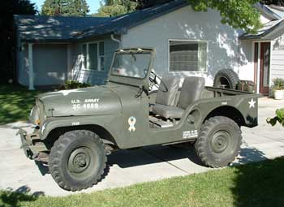
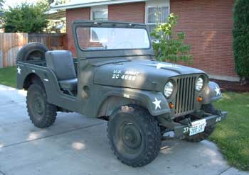
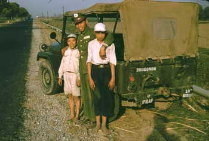
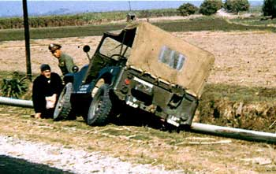
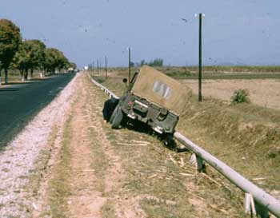

LynnBuchanan.com
A Jeep Story
Nearly every kid wants a real jeep.

There I was, riding the bike back from a test flight in the Biplane, in August 06, Yakima Washington. Just south of Nob Hill on 32nd, this classic military Jeep went past me. I was admiring the original brass plates on the dash and the new paint job while remembering that I have been wishing for a vehicle I could take apart and work on without worrying about the various computer chips and what they cost. After the Jeep got past me, there was a sign on the spare tire saying, "For Sale". The traffic light on Nob Hill was red so the driver had to stop and I hurried up.When I caught up with the jeep, I asked the driver how much he wanted and he told me his price --- "but might take less today". After a bit of discussion the price was in the ballpark so I asked him if a hundred bucks would hold it until I got my checkbook. It would. I gave him all the cash in my billfold and we went on our way. When I told Connie, she asked if he had given me a receipt, I said no. She said, "you just shook hands on it?" Yup. "Man thing."
He said he would be home at 1700 hours so we went over and I wrote a check for the balance. There was a bunch of stuff in his back yard that I would need two trips in the pickup to get. I could pick it up next week, because he had things to do right then. Connie dropped me off and I took the Jeep home. Then we went for a ride down over Konnewoc Pass in the Jeep, to Connie's laboratory and back. Driving a open military jeep sure brought back memories.

When we went over to the previous owner's house the next Saturday to pick up the rest of the stuff, he told us that he was going to advertise it on the internet the evening I bought it, and didn't want to put up with the hassle. I picked up a set of original tires and wheels, a Korean war hard top, and the original 24 volt electrical system.The jeep is a1955 model. According to the brass plate on the dash it was delivered in 1/55. They were still making the jeeps for the Korean war so the hard top came with it, insulated (sort of). It will be a project for winter work if I ever get around to it. The top needs cleanup, new insulation and painting. This Jeep will be a 3-season show vehicle.
Like all such projects, I made a list of little time-consuming things that will get the jeep to the level of perfection I prefer, for the admiration of any vintage jeep aficionado who looks close.
The Jeep has a top speed of around 47, maybe a bit more, but the speedometer only goes up to 60. It had just under 30,000 miles on the odometer. The story was that the original civilian owner painted it an "ugly" green, put it in the garage in 1963 and worked on it (including rebuilding the engine). He never finished the project. The fellow I bought it from bought it in 2003, finished the engine, put new hoses and tubing on it, painted it properly and has driven it some. He added seat belts and did some minor upgrades, but is mostly stock looking.
Except for the numbers, it is identical to the one I remember
well in Taiwan...

Once upon a time--- (as in mid 1955)
There I was, a 1st Lt. in the USAF who was assigned by our Commanding Officer, a Bird Colonel, to go to the nearest seaport in Taiwan (Kaoshung) to arrange for a US Navy cargo ship to carry all the fighter wing's equipment back from Taiwan to the island of Okinawa. This was after the small fracus between the Chi Coms and the Nationalists over the "offshore islands". As I was heading for my Jeep I heard another Colonel telling a third Colonel to go to the seaport to get a US Navy ship to get our equipment to Okinawa. I waited for him and told him of my assignment. He decided to go with me to be sure it would be done right. He didn't know anything more about shipping than I did, maybe less, since I had worked with the truck line in Yakima and Seattle before going on Active Duty. It takes a lot of Colonels to accomplish what a 1st Lt. has to get done.
The rules of driving in Taiwan were that if you hit someone and killed them, you had to take over their family and live with them as well as providing for them. The USAF, feeling that they could not spare any personnel to live in Taiwan, mandated that all USAF vehicles should be driven by Taiwanese Air Force personnel.

Teng, my driver, and the Colonel occupied the front seats, I rode in the back seat for the 40 or so mile trip from our airbase to the port. As we were roaring along at probably top speed (40-50 MPH) in this early "50's" jeep, the tie rod that kept the front wheels properly aligned with the driver's wishes broke! We promptly swerved off the highway and collided with the 8" steel pipe that the Taiwanese government had placed on concrete pylons just off the right side of the highway.Teng, knowing what was in the pipe, left his seat and leaped at high speed across the highway. The Lt., me, also knowing what was in the pipe left the right side of the back of the jeep and stopped some distance out in the plowed field in the picture. The Colonel looked around and asked in a loud voice, "Lt., what the hell are you doing out there?" My response was to the effect that the pipe had high pressure aviation gas flowing through it from the seaport to the air base and I was leaving the scene before it caught fire. It would have been a spectacular fire!
Fortunately, the pipe only bent, no leaks, so we got to salvage the Jeep, and the Colonel. No one was hurt.
